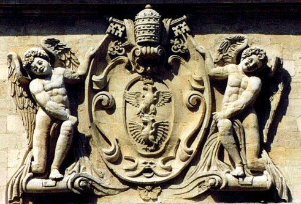
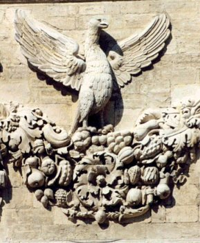
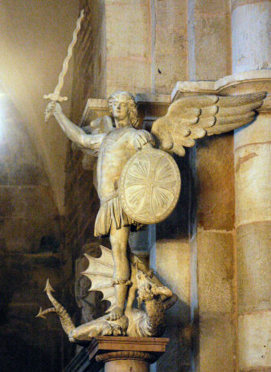
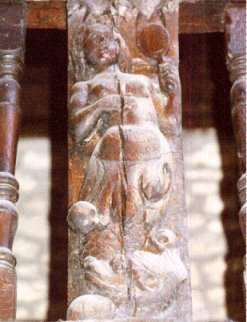
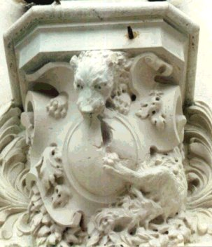
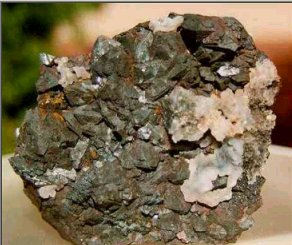
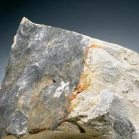

Emblema XXX.
revu le 27 juillet 2003
Sol indiget lunâ, ut gallus gallinâ.
( Le soleil a besoin de la lune comme le coq de la poule1.)
Soleil, tu ne fais rien si ma force ne t’aide,
Comme le coq est impuissant loin de la poule.
Et moi, lune, à grands cris j’invoque ton secours
Comme on entend la poule réclamer le coq.
Bien fou qui prétendrait affranchir de leurs liens
Des êtres que Nature a commandé d’unir2.
Avicenne, au Livre de l’Âme, prévient à plusieurs reprises que seuls doivent être utilisés dans l’art les œufs des poules qui ont été couvertes par le coq. Cela veut dire que le sujet féminin n’est d’aucune valeur sans la vertu masculine et qu’inversement le coq est inutile sans la poule. Ces deux sexes en effet doivent être unis dans l’enclos philosophique pour que la multiplication ait lieu. Les philosophes utilisent la comparaison du coq parce que ce volatile correspond parfaitement à la puissance du soufre, plus qu’aucun autre mâle parmi les oiseaux, puisqu’un seul coq peut être le maître d’un grand nombre de poules et qu’il ne supporte pas aisément la présence d’un rival sur le même fumier, estimant qu’il est pour toutes un compagnon convenable et suffisant. C’est l’oiseau de Mars3 ; il provient de la métamorphose de l’enfant Gallus qui devait observer le soleil pour l’empêcher de surprendre l’adultère de Mars et de Vénus, comme le racontent les poètes4. Il est extrêmement Martial dans le combat qu’il livre jusqu’à la mort à son adversaire. Dans l’œuvre philosophique, il figure le Soleil comme la poule représente la Lune. C’est pourquoi il est aussi nécessaire d’unir le Soleil à la Lune que de joindre le coq à la poule. Le coq est également consacré au soleil : il se lève à sa venue et va dormir en même temps que lui. Il regarde constamment le ciel et il dresse vers le haut ses queues, recourbées comme des faux. Il lutte, pour les poules, contre les serpents. Il est le héraut de la lumière et Latone le chérit parce qu’il l’assista dans ses couches. Latone mit au monde le Soleil et la Lune et ainsi le coq est approprié à la mère et au fils5.
Mais le Soleil, la Lune et Latone s’accordent avec les sujets chimiques. Il en est de même du coq et de la poule. Car ceux-ci sont issus d’un œuf et ils produisent à leur tour des œufs qui écloront en petits poussins. De la même manière les philosophes possèdent des œufs qui se transforment en oiseaux de la même espèce, à condition qu’on leur fournisse une chaleur tempérée, semblable à celle de la poule qui couve, fournie d’une façon continue. Alors que chez les autres oiseaux le mâle aussi se pose sur les œufs, le coq seul se considère comme exempt de ce devoir, de cette charge. Ainsi le soin et la peine de faire éclore les œufs et d’élever les petits incombent entièrement à la poule. On peut observer l’empressement et la sollicitude qu’elle manifeste dans cette tâche, la rapidité avec laquelle elle mange, boit, soulage son ventre pour courir en hâte vers ses œufs avant qu’ils ne viennent à refroidir. C’est également un ouvrage de la nature digne d’admiration que la force et l’élan avec lesquels elle défend ses petits, la tendresse avec laquelle elle les recueille et les protège sous ses ailes pendant qu’ils sont nus, la voix, pareille à celle d’une cloche, dont elle les convoque et les retient, le soin qu’elle met à briser pour eux les miettes ou les grains trop durs et à se servir de son bec comme d’un couteau. Et tout cela, pour que les œufs et les poulets ne fassent pas défaut à l’alimentation des hommes.
De la même manière, le philosophe ou l’artiste procède à toutes ses opérations avec un soin et une prudence extrêmes. II va prendre les œufs dans leurs lieux, là où le coq s’est trouvé, il les examine avec soin de peur qu’ils ne soient pas frais, puis il les nettoie, les prépare et les dispose dans ses vases comme dans des nids et leur administre la chaleur convenable6. Sous l’effet de celle-ci, les sujets mélangés entre eux exercent et subissent de jour en jour leurs influences réciproques jusqu’à ce qu’après un long espace de temps, passant par des couleurs diverses, ils en arrivent à posséder une couleur et une essence uniques. Dans cette œuvre, la solution, la coagulation, la sublimation, l’ascension, la descension, la distillation, la calcination et la fixation s’effectuent comme opérations intermédiaires7. Ce qui est dur et compact ne peut en effet être altéré ; c’est pourquoi il est nécessaire de le dissoudre au préalable pour qu’il devienne liquide et mou. Dès que l’on a un corps dissous, il convient de le coaguler pour l’amener non à la dureté primitive, mais à un état où il est souple comme le miel. La sublimation sépare le pur de l’impur, ennoblit ce qui est vil, élève ce qui est bas. Elle doit donc être également présente, étant en quelque sorte la dame et la maîtresse de toutes les opérations. Pendant la sublimation, certaines parties montent assez haut, c’est l’ascension, et d’autres descendent et ainsi s’effectue la descension. Puis la distillation, souvent effectuée dans l’intervalle, clarifie le tout, et ce qui demeure au fond est brûlé8. Tous deux deviennent fixes et ainsi s’achève l’œuvre. Si quelqu’un rassemble toutes ces opérations particulières sous la notion de l’opération générale qu’est la COCTION, il ne s’éloignera guère de son dessein. De même en effet que tous les poussins courant ça et là vont se retrouver sous les ailes d’une poule unique, leur mère et leur nourrice, ainsi tant de modes d’opérations, tant de chemins divers se rejoignent tous dans l’œuvre des femmes qui est la coction9.
La cause de tout ceci est la Lune qui doit être exaltée au degré sublime du Soleil, ce qui signifie que l’on cherche à réaliser un mariage durable entre le Soleil et la Lune10 ; lorsqu’il aura eu lieu, toutes les ambassades, les promesses, les étreintes passagères, les incertitudes prendront fin11. Il y aura désormais pour l’un et l’autre un seul lit et une seule chair, un amour mutuel et constant, une éternelle paix et une alliance indissoluble. Le Soleil est de peu de prix sans la Lune et la Lune sans le Soleil est de condition méprisée et de vile origine12. Mais le Soleil son époux lui confère splendeur, dignité et force, c’est-à-dire fermeté de l'âme et du corps. La Lune, de son côté, assure au Soleil la multiplication de ses enfants et la propagation de sa race13. D’où les paroles du Jardinier (Rosarius) :
« Si l’un d’eux seulement se trouvait dans notre Pierre, la médecine ne s’écoulerait jamais facilement et ne donnerait pas de teinture ; et si elle en donnait, elle ne teindrait pas si ce n’est dans la mesure où il y en aurait de reste, et le Mercure s’envolerait en fumée, car il n’y aurait pas en lui de réceptacle pour la teinture.»14
Et Geber reconnaît au Livre des Preuves que si le Soleil et la Lune sont incorporés ensemble avec art, on ne les sépare pas facilement15.
Notes1. ce chapitre est consacré aux opérations du Rebis. Pernety nous en dit :
Rebis. (Sc. Herm.) Matière des Sages dans la première opération de l'Œuvre. L'esprit minéral crud comme de l'eau, dit le bon Trévisan, se mêle avec son corps dans la première décoction en le dissolvant. C'est pourquoi on l'appelle Rebis, parce qu'il est fait de deux choses, savoir du mâle et de la femelle, c'est-à-dire du dissolvant et du corps dissoluble, quoique dans le fond ce ne soit qu'une même chose et une même matière. Les Philosophes ont aussi donné le nom de Rebis à la matière de l'œuvre parvenue au blanc, parce qu'elle est alors un mercure animé de son soufre, et que ces deux choses sorties d'une même racine ne font qu'un tout homogène. V. ANDROGINE , HERMAPHRODITE . REBIS se prend aussi pour les excréments humains, et pour la fiente de pigeons. [Dictionnaire]La figure I montre, à l'instar d'une coupe anatomique, une sorte « d'écorché » du Rebis. Au centre, on aperçoit l'athanor qui contient les deux Soufres non encore réunis. L'évêque est plus que suggéré par l'énorme mitre et les clefs entre-croisées qui signent sa nature mercurielle. L'image suggérée ne laisse pas, d'ailleurs, d'être inquiétante par la puissance suggérée que possède effectivement l'artifice de sages [des déflagrations d'une intensité surprenante ont été notées par les alchimistes et même par des chimistes comme Frémy et Gay-Lussac, qui faillit d'ailleurs perdre une main lors d'expériences conduites avec des substances congénères de celles que les alchimistes emploient dans la confection de leur Mercure]. Seuls des anges avaient le pouvoir de nous montrer, à l'aide d'écarteurs appropriés, l'anatomie du Mercure philosophique, puisque ce sont eux qui distillent de leur urine la rosée des Sages. L'épaisseur de la mitre montre, au vrai, les couronnes de dépuration superposées.
FIGURE I
(Hôtel des Monnaies, Avignon : le Rebis vu en coupe - cliché Alain Mauranne)
Comme on l'a noté ailleurs, les alchimistes ne sont pas d'accord sur les épithètes qu'ils donnent à leur matière préparée. Ici, Pernety englobe sous le mâle le corps dissoluble et sous la femelle, le dissolvant. On peut se tirer d'embarras en disant que l'ensemble forme le Compost [Rebis + Mercure]. Mais le doute persiste quant à ce que recouvre exactement le terme Rebis [chose double]. Fulcanelli a dit qu'il s'agissait d'une lentille biconvexe, blanche sur une face, noire sur l'autre et violette dans sa cassure. Basile parle d'homme double igné. Le Rosaire parle du bain où vont se dissoudre les époux royaux. Et à quelle phase de l'oeuvre se rapporte le Rebis ? Car dire qu'il s'agit de la matière dans la première opération de l'oeuvre ne veut rien dire. Par la voie sèche, nous avons compté trois oeuvres : l'une désignant la captation et la préparation des matières ; la seconde, désignant la préparation du Mercure commun, la troisème, désignant la Grande coction. Il est clair que Pernety a en vue le début du 3ème oeuvre, là où s'inscrivent les mystérieux régimes planétaires. Voyons l'article androgyne :Androgine ou Hermaphrodite. Nom que les Chymistes Hermétiques ont donné à la matière purifiée de leur pierre, après la conjonction. C’est proprement leur mercure, qu’ils appellent mâle et femelle, Rebis, et de tant d’autres noms, qu’on peut voir dans I’article MATIERE. Ils l’ont nommé ainsi, parce qu’ils disent que leur matière se suffit à elle- même pour engendrer, et mettre au monde l’enfant royal, plus parfait que ses parents. Que leur matière est une; c’est leur azoth, duquel ils répètent souvent que l’azoth et le feu suffisent à l'Artiste; que néanmoins elle conçoit, elle engendre, elle nourrit, elle manifeste enfin ce Phénix tant désiré, sans addition d’autre matière étrangère. Il faut cependant savoir que leur matière est composée de deux et même de trois, sel, soufre et mercure; mais que tout n’est autre que le fixe et le volatil qui étant joints et réunis dans les opérations, ne sont plus qu’une matière qu’ils appellent alors Androgyne, Rebis, etc. [Dictionnaire]Voilà qui nous paraît déjà plus proche de la réalité. Lorsque Pernety dit que cette matière est leur Mercure, il faut entendre Mercure philosophique, c'est-à-dire animé. Voyons enfin l'article hermaphrodite :Hermaphrodite. Fils de Mercure et de Vénus, se promenait dans un lieu solitaire, où il y avait une fontaine. La Nymphe Salmacis qui s’y baignait, fut éprise de la beauté du jeune homme qui s’était disposé à s’y baigner aussi. Elle le sollicita avec beaucoup d’instances, et ne pouvant l’engager à seconder ses désirs amoureux, elle courut à lui pour l’embrasser, et pria en même temps les Dieux de lui accorder que de leurs deux corps il ne s’en fît qu’un; ce qui lui fut accordé. Hermaphrodite obtint alors que tous ceux qui se baigneraient dans cette fontaine, soit homme ou femme, participeraient à l’un et à l’autre sexe. La matière de l’art Hermétique tient de Mercure et de Vénus, et porte elle-même le nom de Mercure des Philosophes : plus d’un Adepte lui ont donné le nom de Vénus, et c’est en effet de l’un et de l’autre qu’elle est composée. Il est à remarquer que ce fils de Mercure et de Vénus ne devint Hermaphrodite qu’après son union avec la Nymphe Salmacis, et la matière ne prend aussi le nom de Rebis et d’Hermaphrodite, qu’après la jonction du soufre et du mercure des Sages dans leur fontaine, qui est, dit Trévisan, la fontaine où le Roi et la Reine se baignent, comme le firent Salmacis et Hermaphrodite. La propriété qu’acquit alors cette fontaine de rendre participant des deux sexes tous ceux qui s’y baigneraient, est précisément la propriété de l’eau mercurielle des Philosophes, qui est prise pour la femelle, et qui ne fait plus qu’un corps des corps qu’on y baigne, parce qu’ils s’y dissolvent radicalement, et s’y fixent ensuite de maniere à ne jamais pouvoir être séparés. C’est pour cette raison que quelques Philosophes ont donné le nom d’HERMAPHRODITE à leur matière fixée au blanc.Cet article nous permet, en tout cas, de donner un sens élargi à Vénus, qui ne désigne pas toujours le vitriol bleu ou l'une des parties du Mercure. Vénus [voir la Révélation de Basile] a des rapports occultes avec Saturne, que beaucoup d'étudiants ignorent. Quoi qu'il en soit, la mythologie permet de donner son sens réel à la fontaine d'eau mercurielle. Et l'étymologie d'Hermaphrodite même ne peut prêter à confusion : il s'agit bien de l'union de Vénus et de Mercure. De quelle Vénus s'agit-il ? A cette question, les alchimistes n'ont jamais apporté de réponse claire. Les uns en tiennent pour Vesper, d'autres pour Lucifer ; certains y voient une TERRE dans laquelle ils ont confondu en confusion les impétrants, en la rapportant à la stibine vulgaire, au lieu du stibium de Tollius qui, à en croire Fulcanelli, donne son véritable sens à l'antimoine hermétique.
FIGURE II
(le phénix, Hôtel des Monnaies, Avignon - cliché Alain Mauranne)Résurrection de l'amalgame sous forme réincrudée. Signalons au lecteur curieux que les armoiries et la volière de cet édifice de l'Hôtel des Monnaies sont de spièces des armoiries du pape Paul V et du cardinal Borghèse, son neveu. On ferait donc erreur d'y voir à proprement parler des emblèmes hermétiques dédiés à l'alchimie [rappelons que Fulcanelli nommait logis alchimique toute demeure, toute pièce même d'ameublement, où notre tonalité spirituelle se trouve en phase avec l'ambiance du lieu].
2. l'épigramme ne comporte rien d'extraordinaire. Notons la référence au coq, symbole très employé par Fulcanelli et E. Canseliet : il renvoie au Soufre, aux Gaulois [cf. Cyrano de Bergerac : 1, 2, 3, 4,] et à l'allégorie du coq et du renard [cf. Atalanta, VII]. Cette allégorie se comprend comme une fixation progressive du fixe qui l'emporte, peu à peu sur le volatil, comme par ruse et avec « artifice ». Ce n'est pas pour rien que Tollius a écrit :« Je crois que peu de gens ont manqué d'observer, que parmi les hiéroglyphes des Dieux de l'antiquité, le coq est particulièrement consacré à Mercure. Albrieus, dans son petit traité des Images des Dieux, dit ce peu de mots parlant du Mercure : « Il y avait devant lui un coq, qui lui est particulièrement dédié ». C'est donc le coq qui est le signe et la marque du Mercure, que les Chimistes vulgaires ont toujours à la bouche, rarement entre les mains, et jamais dans la méditation de leur esprit; et cependant le Mercure est leur Tout mais pendant qu'ils cherchent ce Tout dans le Mercure vulgaire, ils n'y trouvent jamais rien. Le véritable et simple Mercure des Philosophes, est donc celui duquel j'ai dit ci-devant qu'il est humide, aérien, chaud, esprit volatil, l'hermaphrodite d'Ovide, l'acide et l'alcali volatil [...] » [Le Chemin du Ciel Chymique]
Ce qui n'est pas évident à comprendre, c'est que ce coq, tout en étant volatil, a en lui le signe du Soufre. L'allégorie du coq et du renard consiste donc à trouver le moyen qui permette de conserver au Mercure sa fluidité, sans le faire évaporer, à haute température [cf. Verbum dimissum]. A noter que Tollius verse dans l'erreur lorsqu'il parle de la « méditation de leur esprit », des suites d'une traduction fautive du mot « mediatione » [par la médiation] de la Table d'Emeraude.
3. Nous venons de voir que Tollius dit qu'il s'agit de l'oiseau de Mercure. En fait, le coq peut être compris comme un symbole solaire parce que son chant, de tout temps, a annoncé le lever du Soleil. C'est-à-dire la manifestation de la lumière. Ou si l'on préfère, la capture du rayon igné dans un Corps adéquat. On peut donc le considérer comme un attribut d'Apollon, et de quelque manière qu'on s'y prenne, le coq - tout en étant attaché à Mercure par les mythographes - est marqué absolument par l'empreinte du Soufre. Le Soufre qui gît au départ dans un grand désordre, sous une forme amorphe, va se sublimer dans le Mercure en vue d'une réincrudation, sous une forme cristalline. On peut voir dans cete résurgence un parallèle avec Attis, le dieu solaire, mort et ressuscité. Or, le nom de cette divinité est inséparable de celui de Cybèle, qui figure l'athanor des Sages, c'est-à-dire l'ensemble du dispositif réglant le feu secret, où Atalante et Hippomnénè, en tant que figures léonines, jouent un rôle de premier plan. Dès lors, on parvient à comprendre pourquoi le coq voit la lumière du jour à l'intérieur de lui-même : il ne peut en être autrement puisque le Soufre réincrudé constitue ce rayon igné dont parle Fulcanelli. Enfin, en accord avec le rapprochement entre le coq et Cybèle par l'entremise d'Attis, le coq est aussi rapproché du serpent et, chose curieuse, il prend alors le symbole du temps qui le rend congénère de Saturne, c'est-à-dire du Mercure commun. Dans la symbolique maçonnique, il paraît que le coq correspond au mercure alchimique ; pourtant, on se tromperait lourdement en en faisant un hiéroglyphe de l'eau permanente. Non. Le coq est le symbole du Soufre « en puissance » sublimé et contenu dans le Mercure, mais non point du Mercure même. Si Maier écrit que le coq est l'oiseau de Mars, c'est qu'il a en vue le Soufre rouge provenant des teintures du vitriol romain.
FIGURE III
(collégiale de Beaune - archange Gabriel : l'opération d'Héphaïstos - cliché Alain Mauranne)On aurait donc tort de croire que la victoire de Gabriel sur le dragon marque l'acquisition de la matière première. C'est une opération qui se situe, en fait, au 3ème oeuvre, et qui prélude à la réincrudation. C'est la mise à mort du Mercurius senex qui se déroule, selon notre hypothèse, dans le signe du Sagittaire [voyez le système des décans].
4. Ainsi Homère, dans l'adultère de Mars et de Vénus, dit qu'Apollon assista à ce spectacle, comme ignorant le fait ; et que le Soleil, instruit de toute l'intrigue, en avait donné connaissance à Vulcain. On peut interpréter la scène mythique en se disant qu'Apollon est l'enfant qui naît de la conjonction des éléments du Mercure [Mars et Vénus]. C'est le Soufre naissant, dont l'hiéroglyphe est le coq.
5. C'est tout à fait dans cette optique [voir note 4] que nous interprétons la signification hermétique du coq. Mais d'autres mythographes ont aussi écrit que c'était Diane qui avait aidé Latone à accoucher d'Apollon, en devenant parèdre. C'est du moins ce que rapporte Pernety :« [...] Latone y accoucha premièrement de Diane, qui servit de sage-femme à sa mère, pour lui aider à mettre au monde Apollon, son frère jumeau. » [Dictionnaire]
6. Il s'agit de la préparation des soufres. Il s'agit de l'extraction, dans sa minière, de l'une des matières premières. Cette extraction procède d'une matière qui tient de la pierre mais qui n'en est pas une à proprement parler. C'est un SEL vitriolique ou un guhr, si l'on préfère. On aurait tort d'aller la chercher « es cavernes de la terre » comme le disent les vieux alchimistes. C'est donc que ce sel a déjà été préparé par l'entremise d'Arès et d'Aphrodite, pris au piège dans le filet magique d'Héphaïstos. Et que la minière est, peut-être, sous les yeux mêmes de l'alchimiste. Tripied [Du Vitriol Philosophique] a fort bien parlé de cette matière, qui, rappelons-le, n'est pas unique comme les alchimistes veulent le faire croire.

FIGURE IV
(galetie du Saint-Esprit, Besançon : miroir de la beauté - cliché Alain Mauranne)Du reste, la figure IV permet de voir ce dragon aux pieds d'une déesse qui tient en sa main gauche le miroir de la beauté de Mars. Cette photo fait partie d'un ensemble, nommé la galerie du Saint-Esprit, galerie intégrée dans l'ncien hospice de Saint-Esprit, devenu temple protestant depuis 1842. La galerie en bois est du fin XVe, ou début XVIe siècle.
7. Ces opérations intermédiaires sont décrites dont nombre de grimoires d'alchimie. Aucun ne les a traitées comme Ripley dans ses Douze Portes. C'est un ouvrage complet, à caractère spéculatif, sur l'hermétisme et l'alchimie, mais qui expose dans le détail l'ensemble de la doctrine. A part Ripley, nous voyons les textes suivants, dans l'ordre qui nous éclairent le plus sur ces phases intermédiaires [deux textes principaux sur le sujet] :
- Solution : Nouvelle Lumière Chymique [NLC], Char Triomphal de l'Antimoine [CTA] ;
- Coagulation : CTA ; Livre Secret d'Artéphius [LSA] ;
- Sublimation : NLC ; CTA ;
- Ascension : Douze Portes [DPR] ; Figures Hiéroglyphiques [FHF] ;
- Descension : Table d'Emeraude [TEH] ; Désir Désiré [DDF] ;
- Distillation : Filet d'Ariadne [FAB] ; Toyson d'Or [TOT] ;
- Calcination : Triomphe Hermétique [THL] ; Introïtus, VI [EOPFR] ;
- Fixation : Huginus à Barma [HB] ; Verbum Dimissum [VDT] ;8. Notez que toutes ces opérations, quand elles sont pratiquée au 3ème oeuvre se résolvent à une seule : cuire et décuire, ainsi qu'à la formule célèbre des alchimistes : « solve et coagula ». On comprend tout dès lors qu'on a saisi que la voie sèche au creuset, pendant la Grande Coction, est d'abord faite d'une phase humide [dissolution, putréfaction, sublimation] puis d'un équilibre instable [fixation, solution], enfin d'une phase sèche [coagulation, volatilisation]. Fulcanelli en parle dans le Mystère des Cathédrales. Dans la Solution, le noir domine ; dans [sublimation, ascension et descension], la couleur blanche domine ; dans [calcination, fixation], le jaune orangé, et enfin dans la Coagulation terminale, le rouge. Nous avons alors les concordances suivantes entre les Quatre Eléments et les couleurs symboliques de l'oeuvre :
- NOIR = TERRE transformée en EAU VISQUEUSE BRÛLANTE ;
- BLANC = DISSOLUTION radicale des Soufres ;
- JAUNE ORANGE = FIXATION progressive des Soufres [L'EAU redevient TERRE ; époque instable] :
- ROUGE = COAGULATION ET PROJECTION du Soufre rouge [la TERRE s'imprègne du FEU céleste]9. C'est ce que nous venons d'examiner, notes 7 et 8. Tous les préparatifs que réalisent les alchimistes n'ont pour but que de préparer les matières à la Grande Coction. E. Canseliet a consacré un chapitre entier de son dernier livre, l'Alchimie expliquée sur ses Textes Classiques à cette coction. Mais il ne faudra pas attendre du disciple de Fulcanelli qu'il nous tende une perche secourable. Au contraire, plus rusé, sinon plus dissimulateur que son maître, c'est à des fondrières et à des pièges incessants qu'il convie les enfants d'Hermès. Il nous parle des moustaches du chat dont Fulcanelli avait fait une énigme, parce que leur forme rappelle celle de la mérelle.

FIGURE V
(fontaine, rue du Lycée - Besançon - détail : l'empâtement du Mercure - cliché Alin Mauranne)C'est grâce à la mérelle que l'alchimiste va progressivement réussir à empâter son fougueux dragon, comme le donne à voir la figure V, détail d'une fontaine de Besançon, créée par Baron en 1732.
10. Rappelons que l'exaltation de la Lune est dans le Taureau et celle du Soleil dans le Bélier ; les luminaires sont inséparables dans leur exaltation comme dans leur maîtrise, mais en situation inversée [Cancer et Lion]. De même, leur chute intervient aux signes opposites, la Balance pour le Soleil et le Scorpion pour la Lune. La Balance, faut-il le dire, s'avère constituer l'un des signes les plus mystérieux du zodiaque. Nous aurons peut-être l'occasion d'y revenir [cf. zodiaque alchimique et Atalanta, XLI]. Les conjonctions canoniques ont lieu dans le signe des Gémeaux, dans le Scorpion et dans le signe des Poissons. D'après notre système, la constellation des Gémeaux est un signe d'EAU, celles du Scorpion et des Poissons tenant de l'AIR. On voit donc que le système mis en place lors de la Grande Coction nécessite 2 parts d'AIR pour une part d'EAU. Voilà qui est conforme en tout point à la cabale hermétique. En effet, si nous reprenons l'équation de Platon reliant les Eléments, nous avons :1 FEU + 2 AIR = 1 EAU
Quel est le but de la Grande Coction ? De soutirer le FEU du Mercure, par la capture d'un rayon igné solaire. Et cette opération nécessite de la durée, une gradation élaborée du calorique et le départ très progressif du Mercure, qui - par la voie sèche - est destiné à se volatiliser. Ce départ va consister à soutirer l'AIR de l'EAU. Cela étant réalisé, la Pierre se révélera alors, passant des ténèbres à la lumière et montrant la splendeur de son Soufre rouge. L'équation de Platon sera donc :
1 FEU = 1 EAU - 2 AIR
L'équation permet de poser cette équivalence. Elle met en relief, surtout, l'intérêt de l'usage des hiéroglyphes du zodiaque, se rapportant à la distribution du quaternaire. On voit que la liaison peut être facile à établir avec les rapports échangés entre les points de symbolisme se rapportant aux signes, et ceux se rapportant à l'époque de l'oeuvre en cours, dans le grand magistère. Le problème posé n'est donc pas tant celui de l'utilisation symbolique, à valeur analogique, des signes du zodiaque que l'utilisation correcte, fondée en cabale, des signes zodiacaux eux-mêmes. Et cette question peut être assez bien résolue si l'on emploie le système des décans et les constellations qui sont au voisinage du zodiaque.
11. Il est clairement évoqué ici un processus où l'instabilité est la règle. Tout ce qui a trait au héraut, à l'ambassadeur, etc. est du domaine mercuriel.
12. Remarquez combien est profonde cette réflexion. Qui a-t-il de commun entre notre vulgaire émeri et le plus beau rubis du monde ? une trace de chaux métallique. Cette chaux gît dans le vitriol romain, comme nous l'avons vu dans l'Atalanta, XX. L'émeri ne vaut pour ainsi dire rien ; le beau rubis vaut plus cher que le diamant et vaut beaucoup plus que l'or...
13. C'est le phénomène, si complexe à saisir, de la projection qui est évoqué. La trace de chaux métallique teint, en effet, en masse, le Corps de la Pierre. On peut trouver une analogie avec la façon dont est teinte, par du cuivre, l'aventurine à laquelle une section a été consacrée. C'est Ripley, dans ses Douze Portes, qui a le plus parlé de cette projection ; C.G. Jung l' analysé, mais uniquement en transposition psychanalytique.
14. Ces paroles du Rosaire, malgré leur style alambiqué, semblent correctes. Il faut un CORPS [Soufre blanc, Arsenic] pour donner gîte à l'ÂME [principe de teinture], ce qui se fait au moyen de l'ESPRIT [Mercure]. Un développement est ici possible sur l'utilisation exclusive de l'Âme ou du Corps. En alchimie certes, nous aboutissons à un produit contre nature [entendez nature hermétique, car dame Nature produit ce genre de cristallisations à profusion], mais en spagyrie avancée, nous tenons ici la possibilité de produire un Soufre rouge dépuré. Deux articles des Comptes Rendus de l'Académie des Sciences ont retenu, là-dessus, notre attention. Voici d'abord quelques notes sur l'obtention du fer oligiste par Sainte-Claire Deville.
Sur un nouveau mode de reproduction du fer oligiste et de quelques oxydes métalliques de la nature ; par M. H. SAINTE-CLAIRE DEVILLE.Ces séries d'expériences, menées par l'un des plus grands minéralogistes du XIXe siècle, Henri de Sainte Claire Deville, doivent nous faire réfléchir. Certains points décrits par le chimiste se retrouvent trait pour trait dans des traités alchimiques. D'abord, le fait de s'astreindre à n'employer que des procédés dits de nature. Cela , par parenthèse, suffirait à réduire à néant les ambitions affirmées des alchimistes, quant à professer qu'ils réalisaient d'authentiques transmutations. Ils ont, pour les plus grands d'entre eux, confondus à escient, les transmutations métalliques et les « transmutations » minérales, les seules qui soient positives, évidemment, à retenir. Nous avons fait voir que le grand Chevreul n'avait pas été dupe [cf. le § 89 de son Résumé de l'Histoire de la Matière]. Un second point à noter est le caractère très particulier du Mercure employé par Sainte-Claire Deville [nous employons ce terme en considérant, selon notre hypothèse, qu'il s'agit là d'authentiques expériences alchimiques réalisées par les minéralogistes français du XIXe siècle]. Ce Mercure a trois propriétés fondamentales : sa perpétuité, son action, exercée par sa seule présence et enfin, le pouvoir qu'il a, en quantité limitée, de transformer une quantité illimitée de colcothar en fer oligiste [ce qui s'apparente à l'opération de la multiplication que l'on lit dans maints traités]. Ce caractère permanent concerne le fixation du volatil [en l'occurrence des chaux métalliques, transportées par de l'esprit de sel]. Il s'avère, en effet, que l'esprit de sel constitue un agent minéralisateur, dans certaines conditions. La condition essentielle à la préparation du Soufre rouge est la lenteur avec laquelle le courant de gaz HCl passe sur le colcothar [sur la préparation du colcothar, voyez Atalanta, XXV]. Ce colcothar est transformé alors en fer oligiste cristallisé [cf. figure VI], que nous pouvons identifier au Soufre rouge des alchimistes, c'est-à-dire à la teinture. Outre le fer oligiste, la même méthode, conduite à une température moins élevée que le rouge vif, on obtient des cristaux de fer spéculaire, analogues à ceux de l'île d'Elbe [à propos, a-t-on noté les relations curieuses dont rend compte Fulcanelli sur Napoléon, dans les Demeures Philosophales ?]. Gay-Lussac semble avoir obtenu aussi du fer spéculaire en se livrant à une expérience de spagyrie élémentaire : tremper du vitriol vert dans de l'eau salée...« Dans les diverses communications que j'ai eu l'honneur de faire devant l'Académie, je me suis attaché à démontrer l'action spéciale d'un certain nombre de substances convenablement choisies sur les matériaux les plus communs de l'écorce terrestre pour amener ceux-ci à l'état cristallin avec les propriétés, la forme et la composition des minéraux que nous rencontrons dans la nature. Je me suis astreint à employer exclusivement les agents que nous découvrons chaque jour dans les émanations de toute sorte, lesquelles opèrent aujourd'hui comme autrefois pour déposer dans les fissures des terrains et dans les cheminées volcaniques les minéraux des filons et des roches éruptives.
» Parmi les matières gazeuses que nous rencontrons dans la nature, il en est quelques-unes qui, sans se fixer sur aucune des substances qu'elles touchent, les transforment ou les transportent en les transformant en matières minérales absolument semblables à celles que l'on rencontre dans la nature. C'est le rôle que j'ai fait jouer à l'hydrogène dans la formation du zinc oxydé, de la blende, au fluorure de silicium pour la formation du zircon. C'est le rôle qui convient aussi à l'acide carbonique dans la formation des calcaires par dissolution et dans la reproduction des carbonates métalliques dus à M. de Senarmont. Ce sont des substances que je proposerai d'appeler agents minéralisaleurs. Je les caractérise par cette perpétuité de leur action, qui se continue indéfiniment jusqu'à ce qu'elles soient fixées par des matières autres que celles sur lesquelles elles sont appelées à réagir pour ainsi dire par leur seule présence. Ces substances, quand elles existent dans la nature, ce qui permet de les faire entrer dans les hypothèses de la géologie, sont toutes compatibles avec l'eau qu'on rencontre, en effet, partout ; et l'eau n'annule et n'amoindrit jamais leur action spéciale.
» Outre l'eau, l'hydrogène sulfuré, l'acide sulfureux, l'acide carbonique, le fluorure de silicium et l'hydrogène, qui avec l'azote et l'oxygène constituent presque exclusivement les matériaux gazeux de nos émanations, on trouve encore l'acide chlorhydrique. Il était curieux de chercher si l'acide chlorhydrique est à lui seul un agent minéralisateur : c'est ce que j'ai pu démontrer au moyen d'expériences qui m'ont donné les résultats les plus concluants.
FIGURE VI
(hématite)» L'Académie voudra bien se rappeler qu'en faisant passer un courant lent d'hydrogène pur sur de l'oxyde ou du sulfure de zinc, j'ai reproduit le zinc oxydé et l'une des deux espèces de blende connues aujourd'hui. Ces transformations se font sans la production d'aucune trace soit d'eau, soit d'hydrogène sulfuré. Une expérience analogue réussit avec une perfection extrême quand on remplace l'hydrogène par l'acide chlorhydrique et l'oxyde ou le sulfure de zinc par le sesquioxyde de fer.
» Quand, dans cette expérience que je réalise dans un tube de porcelaine chauffé au rouge vif, je fais réagir l'acide chlorhydrique se dégageant avec une très-grande vitesse sur le sesquioxyde de fer, celui-ci est transformé en sesquichlorure qui se condense dans les parties encore chaudes de l'appareil, et en eau qui est transportée beaucoup plus loin avec l'excès d'acide chlorhydrique. Mais si le courant gazeux marche avec lenteur et régulièrement, on ne voit pas se former la moindre trace de chlorure ; il sort de l'appareil, quelle que soit sa longueur, autant d'acide chlorhydrique qu'il en est entré, et le sesquioxyde de fer amorphe est entièrement transformé en fer oligiste de la plus grande beauté, tout à fait semblable, par ses formes, son irisation et son éclat, soit au fer oligiste de l'île d'Elbe, soit au fer spéculaire des volcans. Je ferai remarquer que dans cette opération une quantité limitée d'acide chlorhydrique peut minéraliser ainsi une quantité indéfinie de peroxyde de fer, sans perdre son énergie et sans changer de composition : car il ne se forme pas d'eau.
» Quand la température du tube de porcelaine est élevée jusqu'au rouge vif de la fusion de l'argent, on obtient, sans qu'il y ait transport sensible de la matière (c'est le caractère fort inattendu de cette expérience), des cristaux tout à fait semblables à ceux de l'île d'Elbe. J'ai mesuré le rhomboèdre primitif de 86° et des angles de 120° et de 158° 50' appartenant au prisme hexagonal régulier et à des troncatures placées sur ses arêtes. Dans ces conditions, il se dégage toujours un peu de chlore, ce qui fait que les cristaux sont magnétiques, comme la plupart des cristaux de fer oligiste, par suite de la présence d'un peu de fer oxydulé répandu dans la matière. Aussi trouve-t-on dans l'analyse un peu moins d'oxygène qu'il n'en faut pour constituer le sesquioxyde de fer [...]
» Quand on opère à une température moins élevée, ou obtient alors le véritable fer spéculaire des volcans, c'est-à-dire des lames rhomboïdales aplaties, portant sur leurs bords l'indication des faces du rhomboèdre primitif.
» Gay-Lussac, en décomposant le sulfate de fer dans un bain de sel marin ou de chlorure de fer par la vapeur d'eau, a produit des lames cristallines de sesquioxyde ou des cristaux semblables au fer spéculaire. Je ne sache pas qu'il ait décrit on mesuré des cristaux de fer oligiste imitant aussi bien des minéraux de l'île d'Elbe que ceux que j'ai l'honneur de montrer à l'Académie.
» On voudra bien également remarquer un échantillon de lave de l'Etna traité par un courant lent d'acide chlorhydrique sec et qui s'est recouvert de cristaux de fer spéculaire nés sur place et dont le transport est au moins insensible.
» On voit, d'après cela, qu'il est complètement inutile de faire intervenir l'action de la vapeur d'eau concurremment avec l'acide chlorhydrique pour expliquer la formation du fer oligiste des volcans. Le gaz à l'état de sécheresse absolue (à plus forte raison s'il est humide) enlève aux laves le fer qui s'y trouve combiné et l'isole en le déposant sur place à l'état de fer oligiste. Il s'opère là manifestement deux réactions en sens inverse dont l'explication serait facile si le fer oligiste était transporté à de grandes distances, mais qui constitue en réalité un phénomène un peu plus compliqué qu'il ne l'est en apparence. Je demanderai à l'Académie la permission de revenir sur ce point délicat en insistant aujourd'hui sur le fait principal et sur les conséquences immédiates qu'on en peut tirer.
» J'ai fait cristalliser par le même procédé l'acide stannique, la magnésie et l'oxyde rouge de manganèse en octaèdres. L'acide stannique se présente en octaèdres qui paraissent carrés, mais que je n'ai pu mesurer à cause de leur petitesse. Je n'oserai donc pas encore les identifier avec l'étain oxydé de la nature. Il en est de même de la magnésie qui, seule ou mélangée avec un peu de sesquioxyde de fer, se transforme sans perte dans l'acide chlorhydrique gazeux en petits cristaux (M. Dumas (Annales de Chimie et de Physique, 3e série, t. LV, p. 190) a trouvé de la magnésie cristallisée en lames transparentes et hexagonales dans le chlorure de magnésium, et il fait à ce sujet une remarque capitale qui, à mon point de vue, présente un grand intérêt. « La magnésie, dit-il, cristallise dans son chlorure comme le peroxyde de fer dans le sel marin. En ce point elle diffère essentiellement de la chaux. » Effectivement dans toutes mes expériences la chaux, mélangée accidentellement aux matières que je traite par l'acide chlorhydrique, s'en sépare toujours à l'état de chlorure de calcium, après l'opération.) sur lesquels on observe les facettes d'un triangle équilatéral qui peuvent appartenir à la périclase ; mais je ne voudrais rien affirmer sans mesures précises. Si j'en parle aujourd'hui, c'est seulement pour me donner le droit de continuer et de perfectionner ces expériences.
» Je ne désire non plus faire ici aucune hypothèse sur la formation de ces minéraux. Je ferai seulement remarquer aux géologues combien les agents gazeux des émanations actuelles ont de puissance encore inconnue pour former les minéraux, combien il est nécessaire d'étudier leurs effets avant de supposer l'intervention inutile et, je le crois, nuisible d'un grand nombre de produits de laboratoire dont l'existence, déjà difficile à maintenir dans les vases où nous les obtenons, est certainement impossible dans la nature, où ils se trouveraient entourés des matières les plus propres à leur destruction immédiate, s'ils pouvaient y être engendrés.
Voilà à présent un commentaire émanant de Théodore Virlet, à propos de la transmutation des roches.
GEOLOGIE. — Lettre de M. THÉODORE VIRLET à M. ARAGO sur le phénomèneCe n'est pas nous qui avons prononcé l'expression « transmustation de roches », mais bien l'un des membres correspondants de l'Académie des Sciences. Nous avons, dans le Mercure de Nature, évoqué déjà les possibilités de nature. Dans le texte de Th. Virlet, nous retiendrons la référence aux transmutations saccharoïdes du calcaire, celle aux roches sédimentaires [Fulcanelli et E. Canseliet ne cessent d'insister par des allusions déournées, sur le calcaire, les empreintes d'ammonite, etc.]. Vient ensuite une évocation de Naxos et de l'émeri qui y existe en gisements, avec un parallèle sur le fer oligiste. L'opération de la Nature aurait été le fait de volatilisations et de sublimations. L'île d'Elbe est à nouveau évoquée [fer oligiste] ; il est remarquable d'observer que Virlet termine sa communication par l'évocation d'une possible reproduction des pierres gemmes.
de la dolomisation et la transformation des roches en général.« Je viens de lire dans un journal le résumé de la discussion qui s'est élevée au sein de l'Académie des Sciences, dans sa séance du 12 octobre, au sujet de la théorie de la dolomisation de M. Buch, théorie ingénieuse et hardie, si l'on se reporte à l'époque où elle a été donnée. On sait que je suis loin de partager toutes les opinions dé ce célèbre géologue; mais, par cela même que je n'ai pas hésité, à une époque où j'étais pour ainsi dire encore ignoré dans la science, à combattre celles de ces opinions que je ne partageais pas, je crois devoir, aujourd'hui, d'après l'indépendance bien connue de mon caractère, venir appuyer le fait qui lui est contesté, lequel .touche d'ailleurs directement à une question dont je me suis beaucoup occupé, celle de la transmutation des roches en général, l'une des plus neuves et des plus importantes questions de la géologie positive, et qui doit nous faire faire les plus grands pas dans l'étude de la composition des roches et amener la solution d'une foule de faits jusqu'ici regardés comme inexplicables.
» En traitant, il y a déjà quelque temps, à la Société géologique de France, des modifications survenues dans une couche de fer hématite, que j'ai eu occasion d'observer près de Sargans, canton de Saint-Gall (Suisse), j'ai été amené, en rappelant un grand nombre de faits analogues que j'ai eu occasion d'observer et que j'ai signalés dans la géologie de la Grèce, à considérer le phénomène de la transmutation des roches sous deux points de vue différents, et à diviser les roches modifiées en deux classes bien distinctes.
FIGURE VII
(dolomie)» 1°. Celles qui ont été modifiées, soit par l'action prolongée de la chaleur, soit par des actions électro-chimiques, soit enfin par l'action de ces deux causes réunies, lesquelles ont changé les combinaisons ou l'arrangement primitif des molécules entre elles.
» 2°. Les roches qui ont été modifiées par des actions et réactions chimiques, à l'aide d'agents étrangers (tels que des gaz), qui sont venus agir directement sur elles et en changer la nature primitive. C'est dans cette classe de roches modifiées, que la dolomie vient naturellement se ranger.
» La première manière d'envisager la modification des roches, à laquelle le premier ai songé, m'a permis d'expliquer comment certaines couches placées au milieu d'autres couches, ont pu se modifier plus que celles-ci, ou même ont pu se modifier complètement, sans que les autres, soit qu'elles fussent en contact, soit qu'elles fussent même à la partie inférieure du terrain, aient quelquefois éprouvé de changement sensible dans leur état primitif et cela sans qu'aucune des couches se soient confondues les unes avec les autres. J'ai émis à ce sujet une opinion qui résulte autant de mes propres observations, que de la manière dont j'envisage les premiers dépôts arénacés qui ont dû se former, à l'époque où les eaux commençaient à se condenser à la surface de la terre, et que bien des personnes pourront peut-être regarder comme une hérésie, mais qui, je n'en doute pas, sera bientôt partagée par tous les bons esprits, savoir, que toutes les roches stratifiées, sans en excepter ni les gneiss, ni les micaschistes, ni les schistes argileux, etc., ont été primitivement des roches de sédiment, formées par voie d'agrégation mécanique, lesquelles n'ont acquis les caractères de cristallinité qui les distinguent aujourd'hui, que par suite des modifications qu'elles ont subies, postérieurement à leur dépôt.
» On conçoit, au contraire, d'après le second mode de modification des roches, que dans le plus grand nombre de cas, toutes les couches se soient confondues de manière à ne plus présenter qu'une seule et même masse sans stratification distincte, comme par exemple la dolomie, certains terrains de grès et d'argiles transformés en jaspes et en porphyres trachytiques, et d'autres roches, telles que j'ai eu plus d'une fois occasion d'en observer; car les agents chimiques, en pénétrant à travers un certain nombre de couches, ou en les traversant en totalité, ont pu enlever une partie des éléments de la roche primitive et en substituer d'autres, ou bien servir à former de nouvelles combinaisons et réunir enfin toute la masse du terrain. C'est à ces considérations que je voulais principalement en. venir, puisqu'elles concernent le phénomène de la dolomisation.
» Je ne conteste pas et j'admets même qu'il y a des dolomies que j'appellerai primitives, quel que soit leur âge géologique, c'est-à-dire qui se sont formées par suite du dépôt simultané des carbonates de chaux et de magnésie, car la magnésie était au moins aussi abondante dans la nature, que la chaux, surtout à l'époque où les terrains anciens se déposaient; mais ces dolomies primitives ont pour caractères distinctifs, d'être toujours en couches régulièrement stratifiées, comme les autres roches auxquelles elles peuvent se trouver subordonnées; tandis que les dolomies dont il est question et que j'appellerai par opposition dolomies de transmutation, celles enfin signalées par M. de Buch dans les Alpes et bien d'autres que je pourrais citer, sont sans stratification et se présentent en masses irrégulières, avec des caractères auxquels les personnes habituées à observer les roches modifiées se trompent rarement. Il n'est pas permis à ceux qui ont visité les dolomies des Alpes, de douter de la réalité, du phénomène, de la dolomisation, quelque difficile qu'il paraisse à expliquer tout d'abord, attendu que la chimie nous enseigne que le carbonate de magnésie n'est pas volatil, ou qu'il se décompose à la chaleur rouge, ainsi que l'a objecté M. Thénard ; c'est en effet d'après ces considérations que, l'un des premiers, j'ai publié mes doutes à ce sujet, à une époque où l'on ne paraissait pas encore s'être occupé de s'assurer par l'analyse chimique que les parties du terrain
qui n'avaient pas été modifiées, n'étaient pas également magnésiennes, c'est-à-dire ne formaient pas des couches de dolomie primitive, circonstance qui aurait ramené alors le phénomène de la transmutation des calcaires en dolomies, à un simple phénomène de modification et de cristallisation, analogue a celui qui a déterminé, par exemple, le changement des calcaires compactes jurassiques de Carrare et, celui des calcaires compactes crayeux de quelques points des Pyrénées, en calcaires grenus ou marbres statuaires. L'un de mes amis, M. Des-Génevez, qui possédait des connaissances fort étendues en chimie et dont les premiers travaux scientifiques font si vivement regretter le perte prématurée, a malheureusement été enlevé aux sciences avant d'avoir publié les résultats de ses recherches chimiques sur la dolomisatiori, qu'il m'a dit, plusieurs fois, lui avoir démontré qu'il existait un passage insensible et horizontal des couches de carbonate de chaux non altéré, à la dolomie ou double carbonate de chaux et de magnésie. Ainsi la transmutation de certains calcaires en dolomie, postérieurement à leur formation, est pour moi un phénomène bien démontré, et qui n'exige selon moi qu'une explication convenable pour pouvoir être admis par tout le monde.
» Qui ne sait combien de faits, peut-être plus difficiles à concevoir jusqu'ici, ont déjà été résolus par suite des belles recherches de M. Becquerel en électro-chimie, et les importans travaux de M. Fournet sur la formation des filons. Bien d'autres faits qu'on n'a pas encore pu bien expliquer, ont été aussi signalés et même admis sans contestation. Par exemple, j'ai constaté que l'éméri de Naxos provenait de filons et par conséquent avait été formé, comme la plupart des fers oligistes, par voie de volatilisation et de sublimation; cependant le corindon et l'oxyde de fer, dont le mélange constitue l'émeri, ne sont pas plus volatils que le carbonate de magnésie, qui fait le sujet de la contestation.
» De ce que nos connaissances chimiques ne nous permettent pas toujours d'expliquer les phénomènes que nous pouvons constater, s'ensuit-il que nous devions les révoquer tous en doute ? La nature n'a-t-elle donc pas eu des moyens d'agir que nous ne connaissons pas encore ? et n'aurait-elle pas pu procéder par exemple, par voie de double décomposition chimique ? Alors le phénomène pourrait s'expliquer facilement. On sait que tous les muriates sont volatils, ou du moins susceptibles de sublimation. La magnésie aurait donc très bien pu arriver à l'état de muriate, donner lieu à la formation d'un hydrochlorate de chaux soluble, qui aurait été enlevé par l'infiltration des eaux; tandis que la magnésie se serait, au contraire, combinée avec la partie de l'acide carbonique mise en liberté et aurait servi à former ainsi de double carbonate de magnésie et de chaux, qui constitue la dolornie proprement dite. Il n'y a certainement rien là de contraire à la raison et qui ne puisse être admis, d'autant plus que le gaz acide hydrochlorique est l'un des gaz qui se dégagent le plus fréquemment des volcans et que les muriates ont dû se dégager beaucoup plus abondamment encore .autrefois, si l'on admet avec les géologues de l'école moderne, que les immenses dépôts de sel gemme qui existent dans les terrains salifères, se sont déposés par voie de volatilisation, au milieu des terrains qu'ils pénètrent.
Je pense, d'après cela, que les modifications des roches de la seconde classe pourront désormais s'expliquer toutes par voie de double décomposition , procédé qui vient de permettre à unde mes amis, M. Aimé, de produire, dans le laboratoire, du fer oligiste cristallisé analogue à celui de l'île d'Elbe, et du fer pur également cristallisé, substance jusque alors inconnue aux minéralogistes ; d'où je conclus que le temps n'est peut-être pas éloigné où noua pourrons facilement reproduire toutes les espèces de pierres gemmes, sans en excepter même le diamant.»
15. Le rubis est réputé infusible, comme le rappelle T. Virlet, cf. note 14.